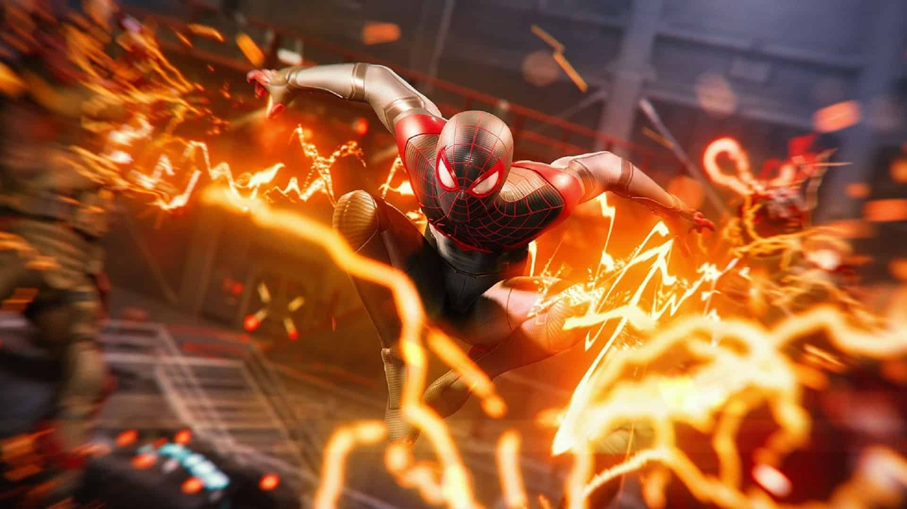
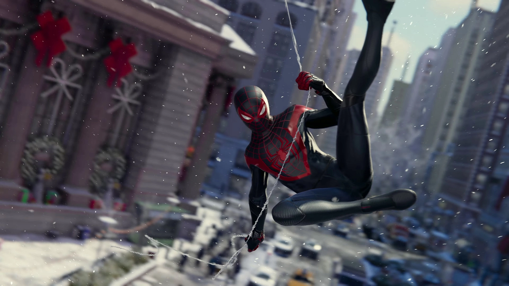
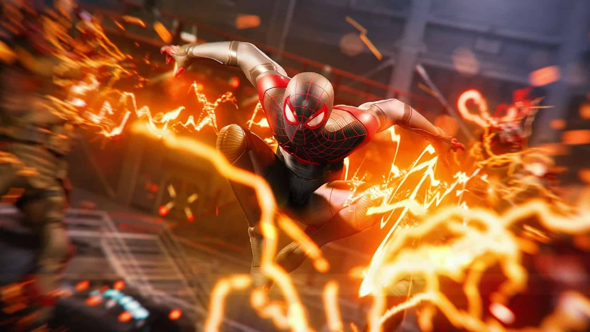
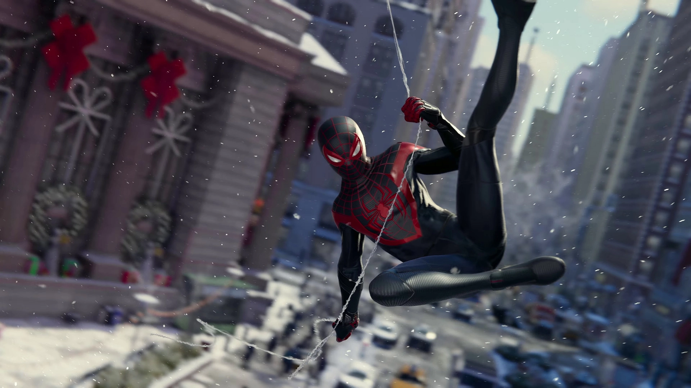

Esse não é o Spider-Man que você conhece ou já viu antes. É um Peter Parker experiente, que domina melhor a arte de combater os grandes criminosos na cidade de Nova York. Ao mesmo tempo, ele está tendo dificuldades para equilibrar sua vida pessoal caótica e sua carreira.
Na mais nova aventura do universo de Marvel, o adolescente Miles Morales está se adaptando a um novo lar enquanto segue os passos de seu mentor, Peter Parker, como novo Spider-Man.
Acompanhe a trajetória de Miles Morales enquanto ele aprende a dominar poderes incríveis e explosivos para se tornar o novo Spider-Man.